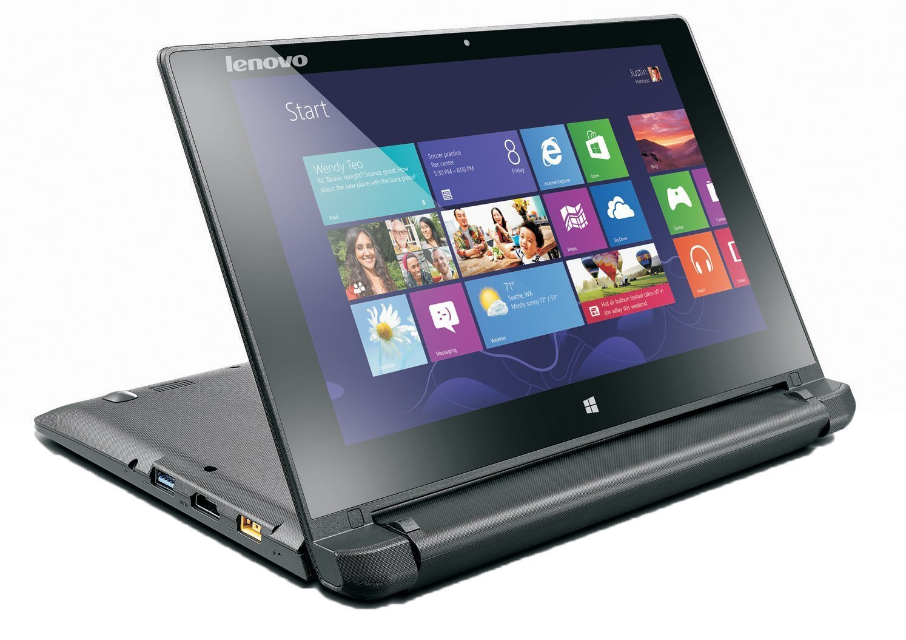

ABOUT COMPUTER
1. Computer The word computer comes from the word “compute’’ which means “to calculate’’. Hence Computer to be a calculating device that can perform arithmetic operations at high speed. A computer is an electronic device which Processes information based upon the instructions provided the deseire output.a computer can store processes and retrieve data as and when desired. 2. Characterstics of computer • Automatic machine. • High speed. • Accuracy • Versatile • Storing • Deligence 3. Limitation of computer • No IQ • No feelings • No learning capacity • Human dependent • Hardware and software dependent 4. Computer generations • Computer generation is a step in technology. It provides a framework for the growth of computer. it has now extend to include both hardware and software to make a computer system 5. 1st GENRATION (1942-1945) • These machine use thousands of vacuum tubes • These vacuum tube are made up of fragile glass device which used filaments as a source of electronics and could control the electronic signals. 6. 2nd GENERATION (1955-1962) • In this new electronic devices are invented that must called transistors. • These were more powerful • Less expensive. • They use magnetic disk and tape as a secondary storage medium. • High-level languages were used in second genration 7. 3rd generation (1964-1975) • • • • • In this integrated circuits are used. The were smaller and less expensive. Consumed less power and produced less heat. Mini computers were used. Time sharing operating system were invented in this generation. 8. 4th generation (1975-1989) • In this micro processor were used. • Faster smaller and less power consuming then third generation. • They were general purpose machine. • Graphical user interface used. • hey were use in hTomes and as for personal use of an human being. 9. 5th generation. (1989-present) • This generation increase the power of micro processor chip. • VLSI technology become ULSI. • More user friendly. • Large primary storage capacity. • Provide network facility(lan,man ,wan) 10. Basic function of computer • Inputting • Storing • Processing • Outputting • controlling Recommended Management Tips Management Tips Coaching and Developing Employees Coaching and Developing Employees Solving Business Problems Solving Business Problems Computer crime and internet crime privacy Computer crime and internet crime privacy GouthamXander Computer History Marivic S. Manlagnit - JMAMES -ICT Coordinator Computer History Marivic S. Manlagnit - JMAMES -ICT Coordinator Marivic Manlagnit Customer perception towards max newyork life insurance Customer perception towards max newyork life insurance malay srivastava Coke SURVEY STUDY Coke SURVEY STUDY malay srivastava Customer satisfaction a study with special reference to ritu we ars at moradabad city Customer satisfaction a study with special reference to ritu we ars at morada... malay srivastava Comparative study of dth tv & tata sky Comparative study of dth tv & tata sky malay srivastava Comparitive study between uncle chips and lays Comparitive study between uncle chips and lays malay srivastava